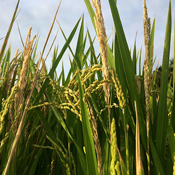
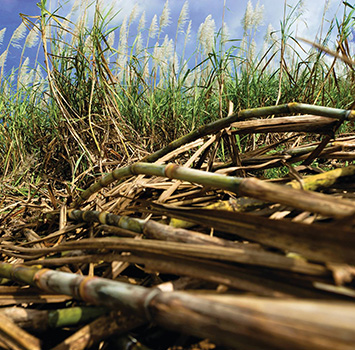
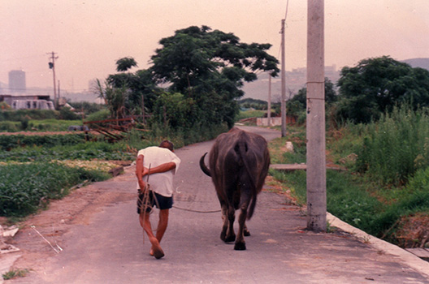
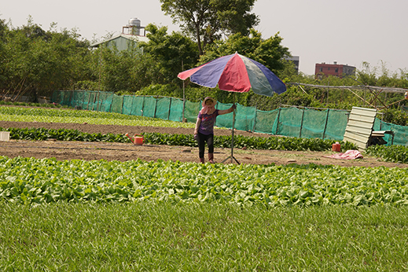

社子島位於基隆河與淡水河的匯流處，是一個由兩河共同沖積而成的沙洲， 河川從上游帶來的肥沃土壤，以及適合耕種的平坦地形，自古以來居民就大多以從事農業維生, 從水稻、甘蔗、鹹草、秀英花、蘆筍，一直到蔬菜，都曾經是社子島上常見的農作物。
現今社子島的先民大約是在兩百多年前，從福建泉州府同安縣渡過臺灣海峽，來到了臺北盆地的西北端「社子島」， 先民們以鹹草圍河造田、挖河土做堤，從淡水河和基隆河引水灌溉，基隆河畔的浮州地區以種植水稻為主，一年兩作， 休耕期改種土豆與甘藷；淡水河一側的溪沙尾地區則以種植蔬菜為主，往浮汕地區過去也有種植甘蔗與秀英花。 社子島的先民會將收成的稻米、蔬菜和秀英花以小船載運，靠著雙手划槳沿著淡水河逆流而上， 送到艋舺和大稻埕的市場和茶行販賣，秀英花是當時製作花茶的主要原料，還曾經外銷到海外。
- 
- 
但河水環繞、地勢低平的沙洲地形也很容易受到天災的影響，常常使得辛苦種植的農作物毀於一旦。 在社子島還沒有堤防的那個年代，每逢颱風來襲，河水暴漲，湍急的河水就會淹沒了農田、沖毀了作物， 島上的居民只能等待暴風雨過去，再重新整理田地、播種插秧，祈求老天爺可以風調雨順、賜予豐收。 有一年一個月來了三個颱風，看著每次重新播種的心血又付之流水，看天吃飯的先民也只能望天興嘆， 雖然覺得老天爺愛作弄人，但也養成了農家不怨天尤人、凡事懂得刻苦耐勞、樂天知命的人生觀。
- 
- 
早期社子島的先民是以大家通力合作挖掘河土造堤的方式，來保護田地不受潮水和河水的侵擾。由於淡水河下游有個寬度約只有120公尺寬的關渡口，即關渡象鼻頭和五股獅子頭之間的河道，這個天然的隘口能阻擋每天漲潮時湧進來的海水，大潮時隘口內側的河水也只有八分滿，不至於淹進地勢低平的田地，先民過著與兩河、潮汐和平共處的生活。
不過這個情形一直到了1963年有了改變，當年的葛樂禮颱風造成大臺北地區嚴重的淹水災情， 政府為了避免慘劇再次發生，聘請國外水利專家學者來臺協助評估改善的辦法，經過勘查研究後， 政府決定拓寬關渡口至200多公尺，以期讓淡水河水不再受到阻礙，遭遇洪水也能快速宣洩。 但萬萬沒想到，炸寬關渡隘口之後，反而造成高漲的潮水再也無法阻擋，每逢漲潮就淹沒了沿岸的大片農田土地， 影響了許多農家的生計，也讓淹水好像變成了社子島的專利。
為了解決淹水之苦，地方上李雲淡、陳懿墩等人，開始積極向市府爭取建設堤防， 於1973年完成高2.5公尺的堤防，但由於當時仍缺乏排水系統和抽水設施，每逢大雨堤防內就積水成災； 幸尋求臺北市瑠公水利會協助時獲得支援，於是社子島在1974年後轉納入該會的灌溉範圍， 從1974年至1978年期間，陸續將堤防加高至4公尺，也完成六個抽水站與排水溝，使得社子島地區 脫離了大雨必淹的窘況，在60至70年代成為大臺北地區主要的蔬菜供應區之一。
資料來源：富安國小60週年校慶校友陳懿墩先生訪問紀錄影片、臺北市瑠公農田水利會社子工作站文史資料